Grimms’ folktale · The spinning room
Rumpelstiltskin
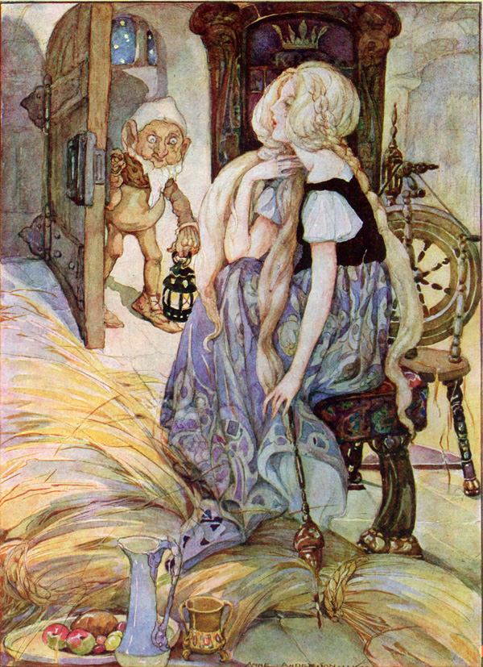

The king comes back in the morning to count the gold. Anne Anderson takes us into the room the night before. The wheel is still. There is straw on the floor, and the miller’s daughter has turned toward a light at the door. If you were sitting in that chair, what would you give for someone to open it?
What does the gold cost her?
First her necklace, then her ring. On the third night she has nothing left to offer. The little man asks for her first child if she becomes queen. The king gets his gold each morning without ever having to hear the bargain.
Later, learning the little man’s name lets the queen keep her child. Look back at the open door. What kind of rescue did it seem to promise the first time?
Panchatantra · The doorway
The Brahmin’s Wife and the Mongoose

A woman comes home carrying water. Her mongoose runs to meet her. In the tale, she sees blood on its mouth. Her baby is somewhere inside the house. Stop at the doorway with her for a moment. What do you think has happened?
See the rest of the plate

She brings the heavy water jar down on the mongoose and kills it. Only then does she go inside. Her child is asleep. The snake lies dead beside the cradle. The blood she saw was real. What did she supply from her own fear?
Public-domain plate and crop source · Read the Panchatantra tale

Ursula K. Le Guin · 1973
The price of happiness
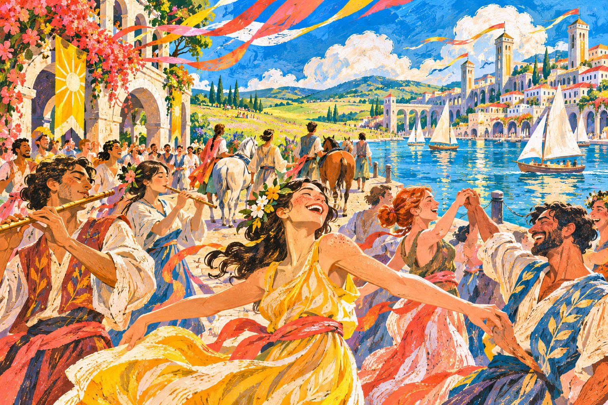
If you stepped into this square, who would you follow? Le Guin gives you room to choose the pleasures that would make this city yours. Pick one person in the crowd before you open the door below.
Original AI-generated illustration (OpenAI), made for this exhibition, 2026. Literary source: The Ones Who Walk Away from Omelas.
What makes this happiness possible?
The city’s happiness depends on one child kept alone in misery. Some citizens walk away. The child stays.
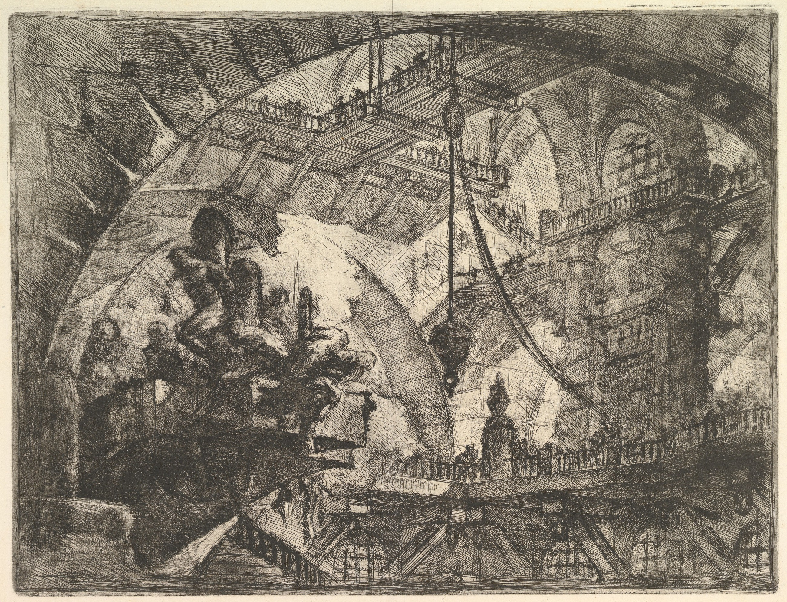
The queen could learn a name and keep her child. The wife could reach the cradle and learn the truth. Here the citizens already know. Some leave, but the child stays behind. Look at the banners again. Who are you thinking about now?
Original AI-generated illustration (OpenAI), made for this exhibition, 2026. Literary source: The Ones Who Walk Away from Omelas.
Epilogue · Becky Chambers · 2021
A future after refusal
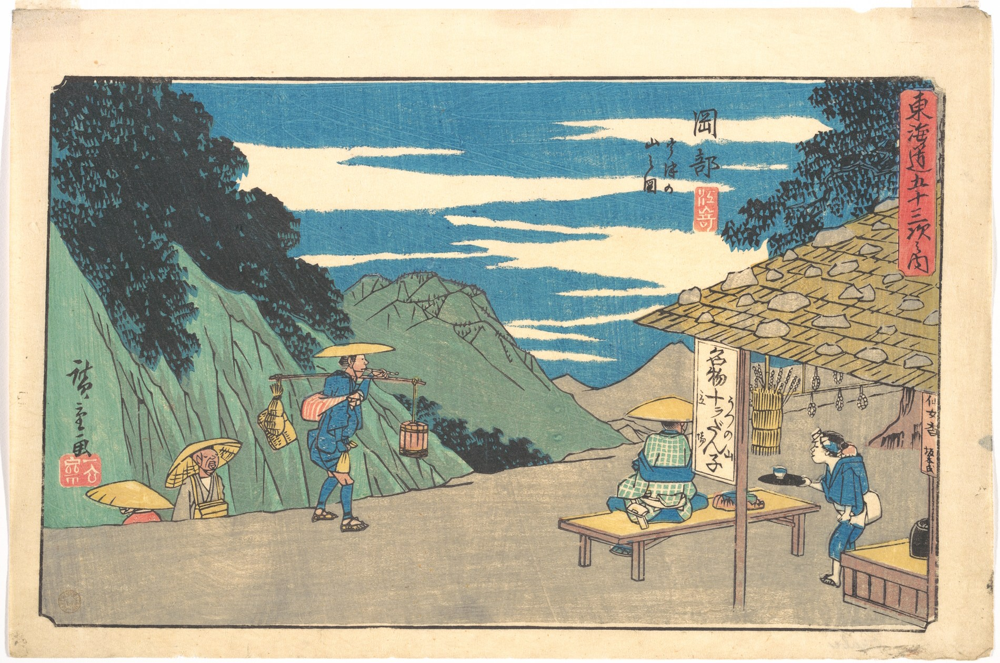
Centuries before this meeting, Panga’s robots became self-aware, put down their tools, and left for the wilderness. A tea monk and a robot meet across that separation. Bring the question from Omelas with you: who has the freedom to walk away?
Original AI-generated illustration (OpenAI), made for this exhibition, 2026. Literary source: A Psalm for the Wild-Built and publisher’s excerpt.
Who gets to decide whether this world is good?
Sulawesi, Indonesia · At least 51,200 years ago
Before writing
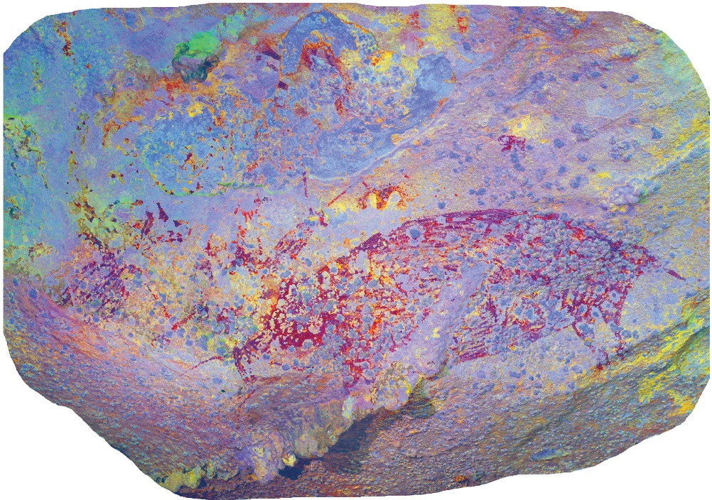
A layer of mineral deposited over the pigment gave researchers a minimum age for the painting. They interpret the arrangement as a scene. The distance between recognizing a figure and knowing what its maker hoped for is where this exhibition begins.
Adapted from figure 3 in Oktaviana et al. (2024), cropped for display. CC BY 4.0. Read the dating study and examine its figures.
Compare the research tracing

We can recognize a story. What its makers imagined as paradise remains unknown.
Nippur, Mesopotamia · Tablet dated 1900–1600 BCE
When the wolf lets the lamb graze
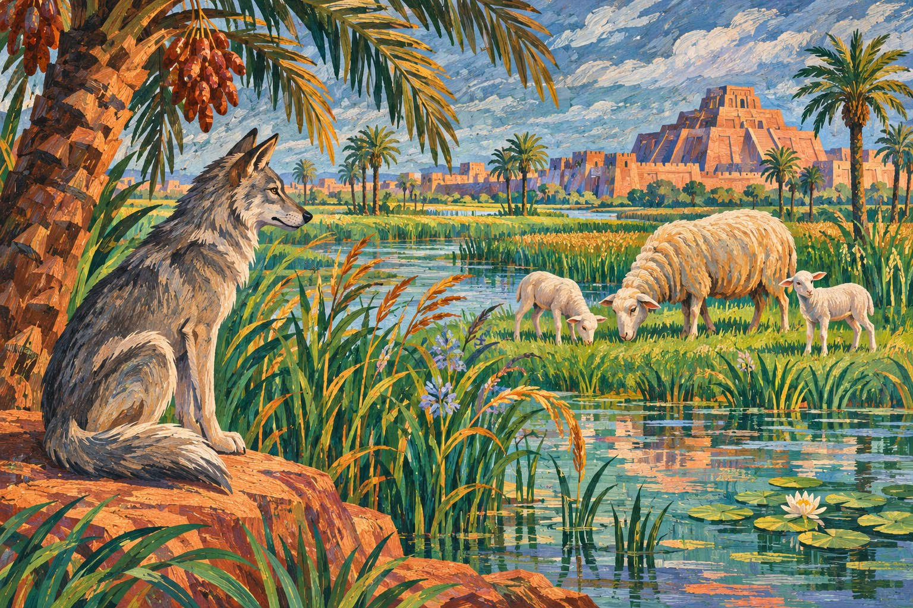
In the opening of Enki and Ninhursanga, a wolf leaves the lambs alone. Yet Dilmun still needs fresh water. When the waters rise, its fields yield grain. One surviving witness to this imagined place is a baked clay tablet from Nippur.
Original AI-generated illustration (OpenAI), made for this exhibition, 2026. Literary source: Oxford’s translation of Enki and Ninhursanga. See the inscribed tablet, Penn Museum CBS4561.
Egypt · Greece · India
The good life
Would your perfect world still have work in it?
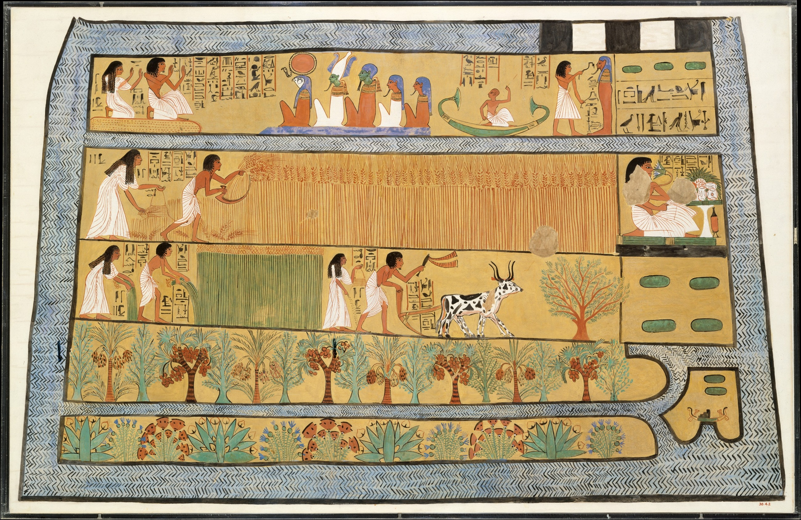
Sennedjem and Iineferti still have things to do in the next world. Grain stands high, and they work together. Look at the hands before turning to Hesiod’s imagined past, where food comes freely.
Charles K. Wilkinson after the painted tomb wall at Deir el-Medina. The Metropolitan Museum of Art, object 30.4.2. Public domain, The Met Open Access (CC0).
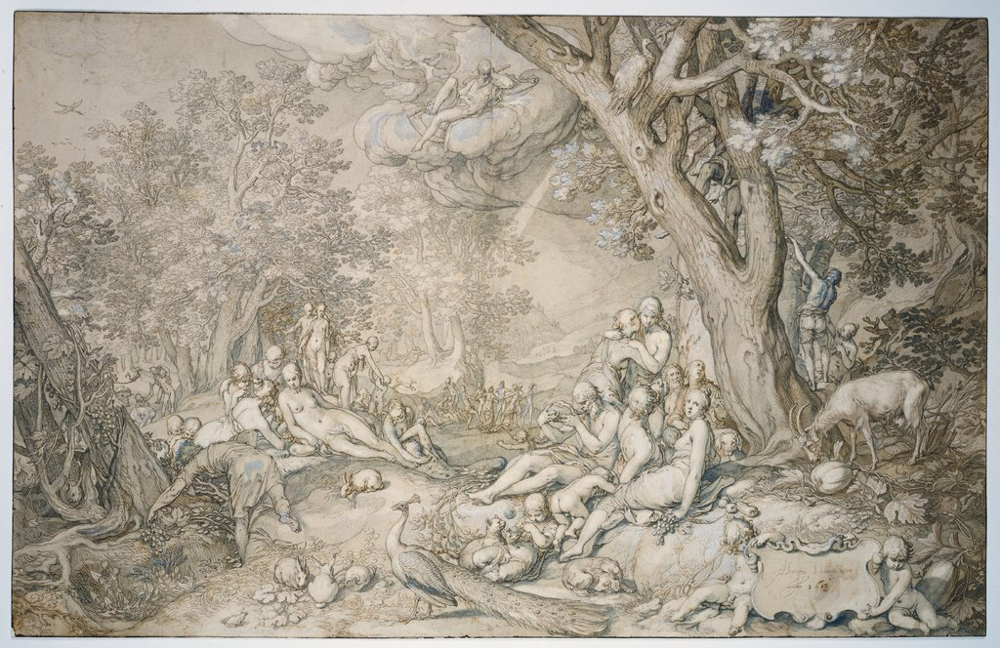
In Works and Days, Hesiod looks backward to the time of Cronos. The earth produces food abundantly, relieving the golden generation of exhausting labor. What did you notice first about the people’s hands?
Original AI-generated illustration (OpenAI), made for this exhibition, 2026. Literary source: Hesiod, Works and Days, beginning at line 109.
Eastern Mediterranean · First century CE
A promise of paradise
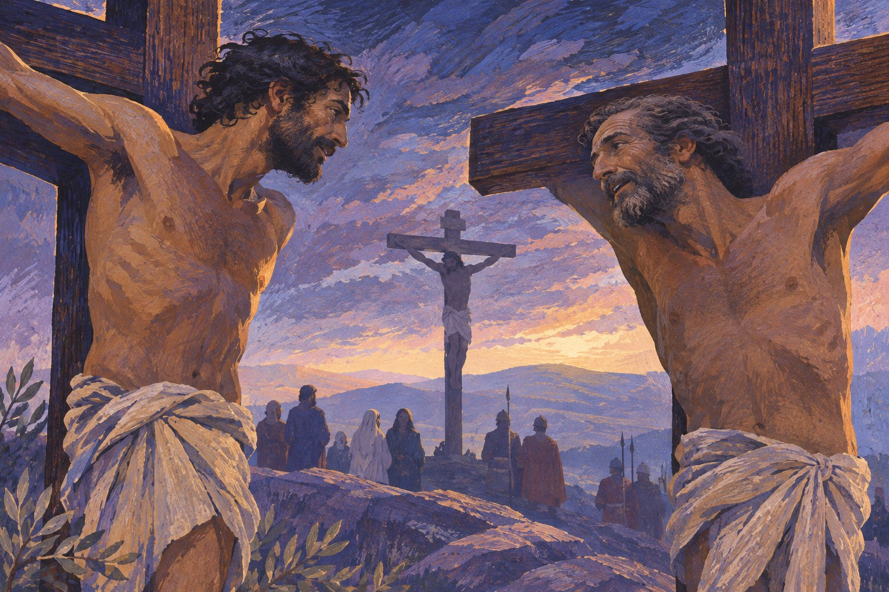
A condemned man asks Jesus to remember him. Jesus promises him companionship in paradise. Luke gives the exchange a voice and a listener, leaving the scenery open to imagination.
Original AI-generated illustration (OpenAI), made for this exhibition, 2026. Literary source: Luke 23:39–43.
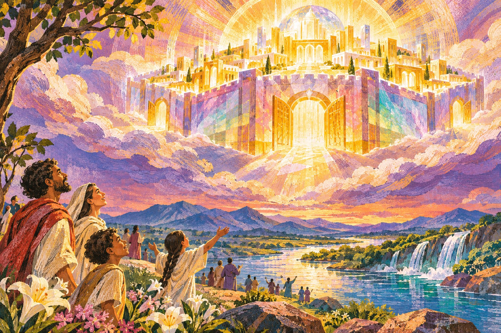
In Revelation a city descends from heaven. God dwells among people, and death and mourning end. Move your eye from the intimate exchange in Luke to the many gates of this collective dwelling.
Original AI-generated illustration (OpenAI), made for this exhibition, 2026. Literary source: Revelation 21:1–4, 12–21.
China · Early fifth-century story · Handscroll painted in 1638
A village beyond the stream
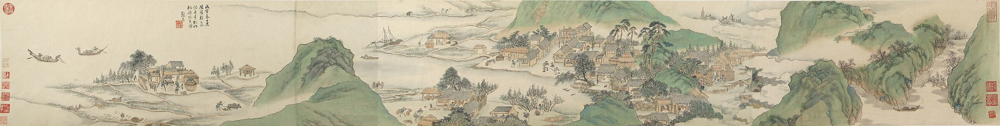
Tao Qian’s fisherman finds people whose families escaped upheaval generations earlier. When he tries to return, the way has vanished. Zhang Hong invites you to make that journey from the right end of the handscroll toward the left.
Zhang Hong, ink and color on paper. The Metropolitan Museum of Art. Public domain. Detail views use the same work.
Arabia · Seventh-century text · Eighteenth-century textile
A garden underfoot

Qur’an 47:15 describes rivers of water, milk, wine, and honey. Centuries later, this carpet’s makers gave a Persian garden the shape of a textile. Trace a canal between the trees and imagine standing inside the pattern.
The Metropolitan Museum of Art, object from the Theodore M. Davis Collection. Public domain, The Met Open Access (CC0). Read Qur’an 47:15.
Siena, 1445 · Louvain, 1516
A garden and an island
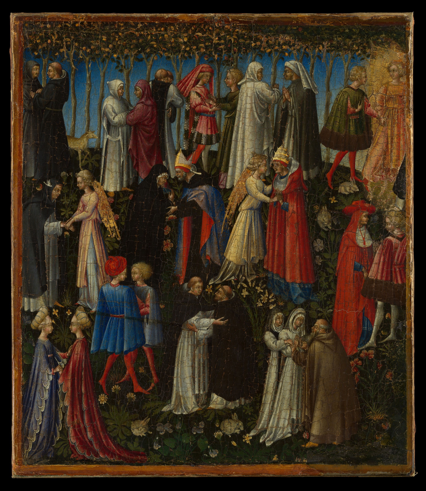
This small panel once sat at the base of a larger altarpiece. Faces and outstretched arms lead the eye from one reunion to another. Imagine trying to plot those meetings on the island map beside it.
Giovanni di Paolo, tempera and gold. The Metropolitan Museum of Art, object 06.1046. Public domain, The Met Open Access (CC0).

The map and invented alphabet in Thomas More’s first edition lend the island the appearance of a place one might visit. From this distance you can see how a settlement is arranged. How much can you tell about a person living there?
Anonymous woodcut, first edition. Public-domain facsimile via The Open Utopia. Georgetown’s first-edition exhibition.
Where would you look for happiness in each picture?
South Asia · Published in Madras, 1905
A kitchen powered by sunlight
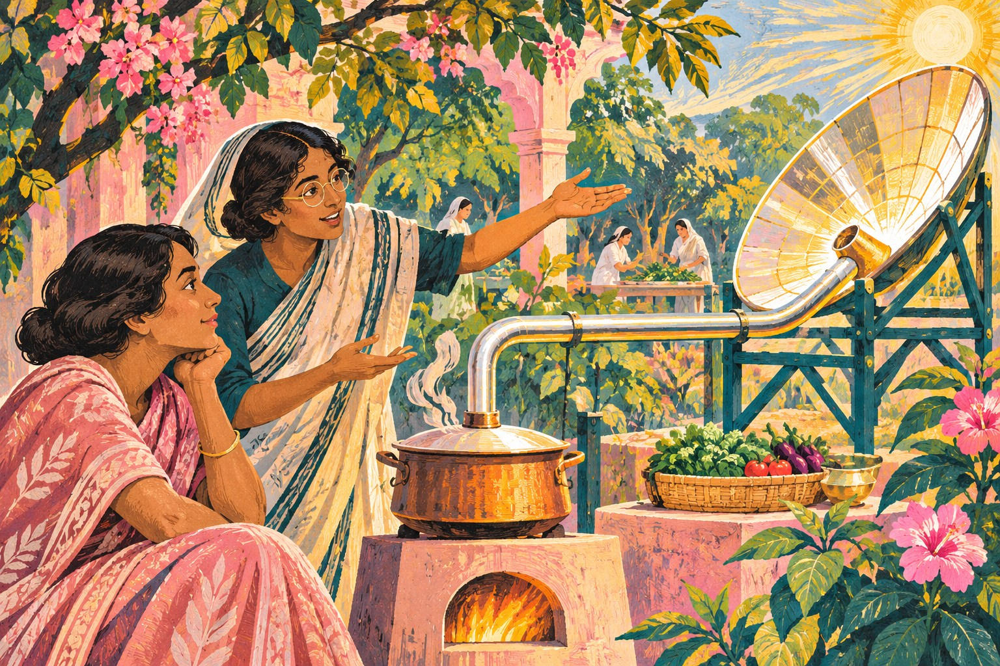
Rokeya Sakhawat Hossain puts scientific knowledge into the hands of women in Ladyland. Sister Sara shows her visitor the pipe carrying concentrated solar heat into the kitchen. Follow its path from the sun to the meal, then revisit the couple harvesting in Egypt.
Original AI-generated illustration (OpenAI), made for this exhibition, 2026. Literary source: Sultana’s Dream, kitchen scene.